마인크래프트 런쳐에 들어간다
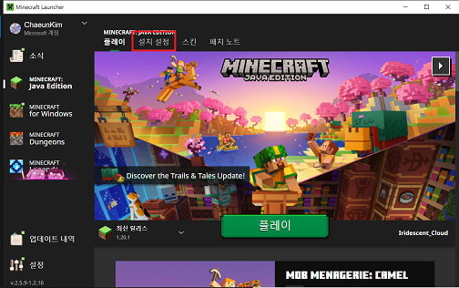상단의 설치 설정에 들어간다
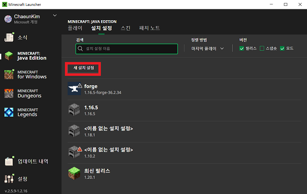새 설치 설정을 누른다
release 1.16.5를 찾아서 만들기를 누른다
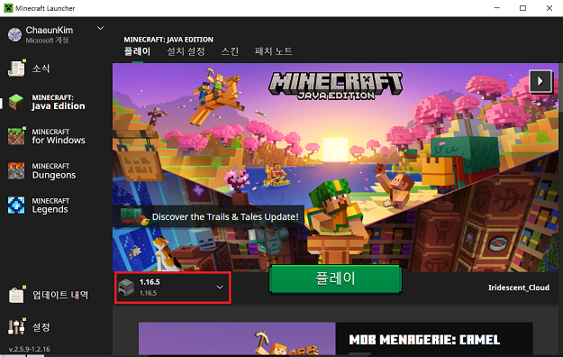1.16.5로 설정하고 플레이를 눌러 마크를 켠다
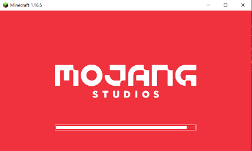 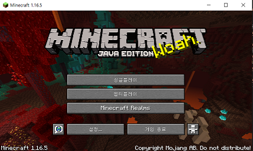잘 실행되었으면 마크를 종료
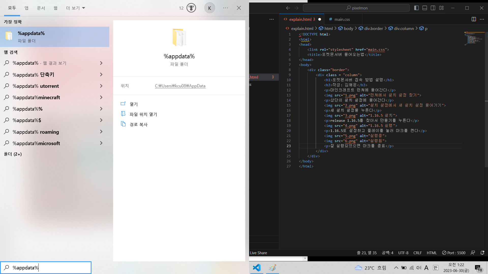%appdata% 폴더에 들어간다
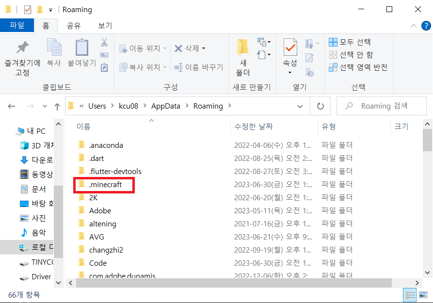.minecraft 폴더로 들어간다
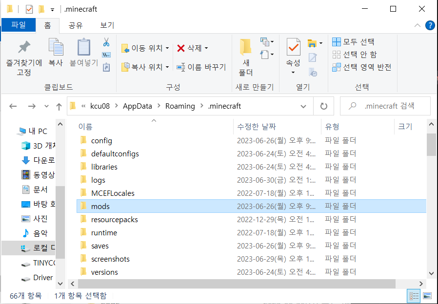mods 폴더로 들어간다
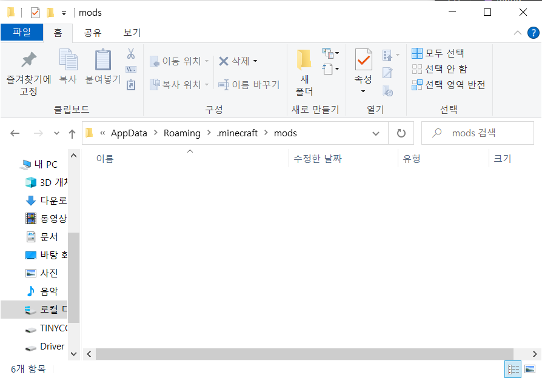mods 폴더는 비어 있어야 함. 뭔가 있으면 크래시가 뜰 가능성이 높으니 다 삭제하시길
mods 폴더가 없으면 그대로 두면 됨
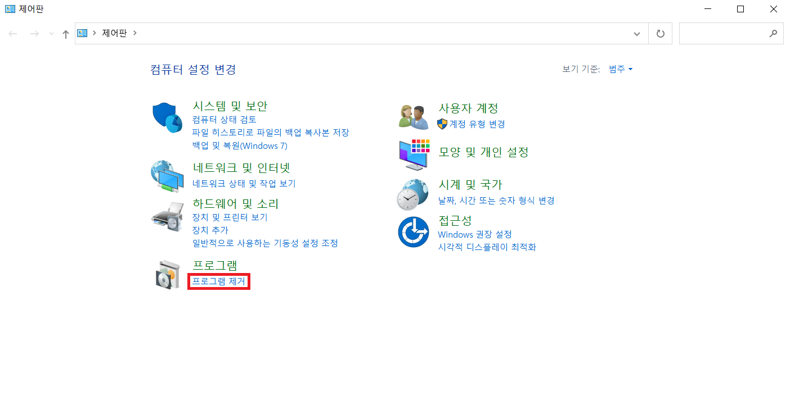제어판 들어가서 프로그램 제거
아이콘들이 저렇게 안 뜨면 우측 상단 '보기 기준'을 '범주'로 바꾸셈
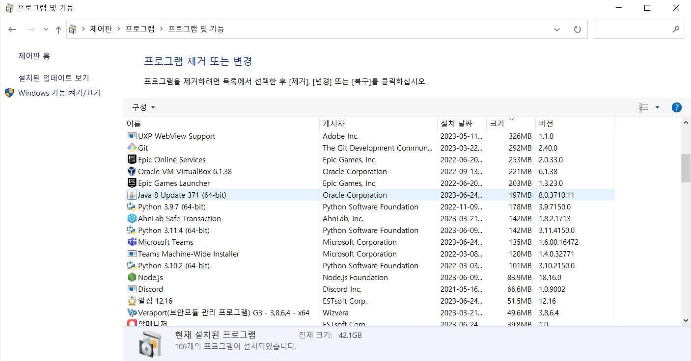Java로 시작하는거 다 지우셈
설치 파일들이 나오는데 일단 다 설치 ㄱㄱ
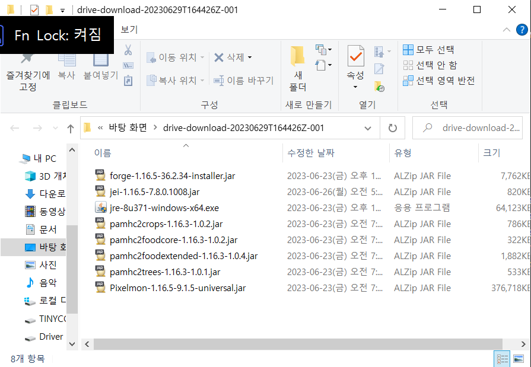그러면 이러한 파일들이 있음. 이 중 jre-8u371-windows-x64.exe를 실행해서
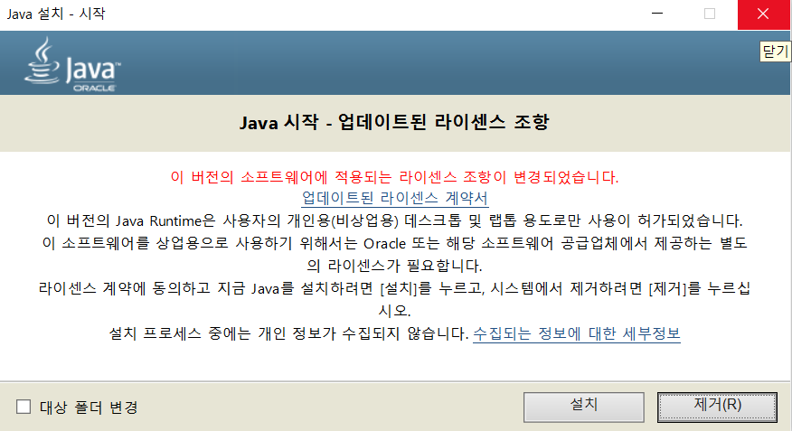Java를 설치한다
그리고 forge-1.16.5-36.2.34-installer.jar를 우클릭하고
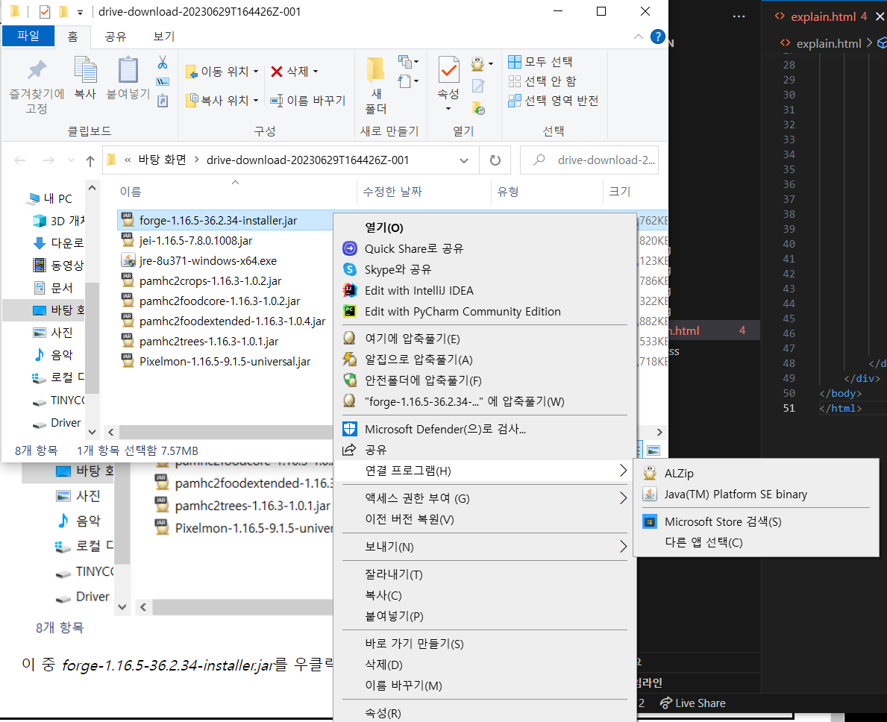연결프로그램 -> Java(TM) Platform SE binary 누른다
만약 Java(TM) Platform SE binary가 없으면 여기 눌러 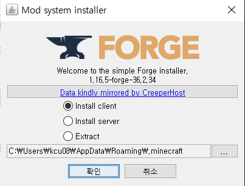이런 화면이 뜰 텐데
그냥 확인 누르고 설치 ㄱㄱ
설치 끝나면 마인크래프트 런쳐 다시 들어가서
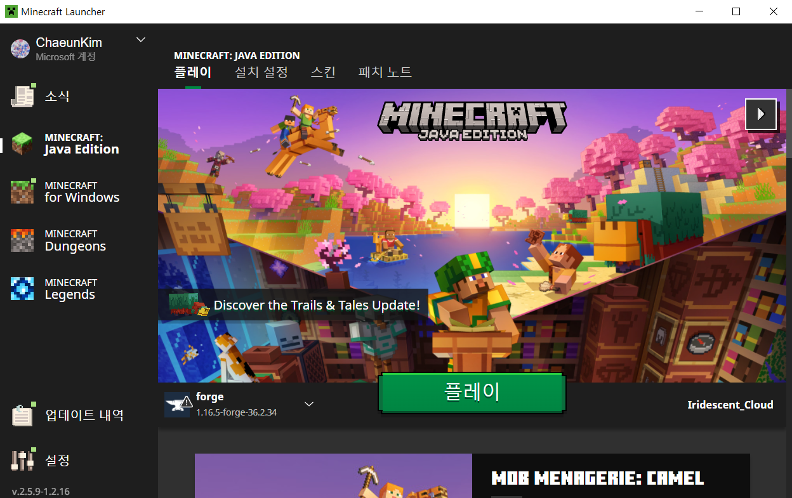그럼 이렇게 바뀌어있을텐데
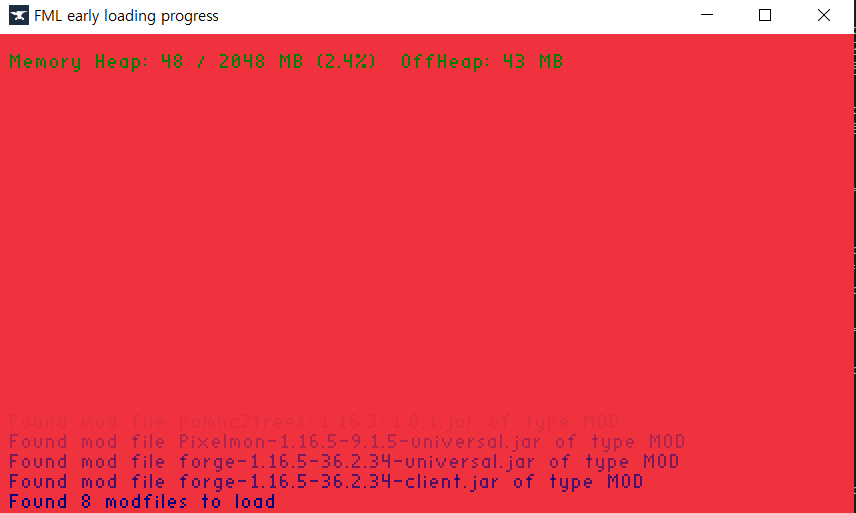플레이누르고 마크를 한 번 켜 보셈. 포지가 잘 적용됐는지 보기 위함
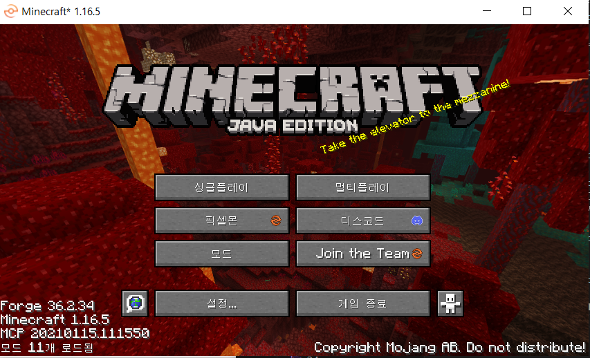크래시 안뜨면 된 거임
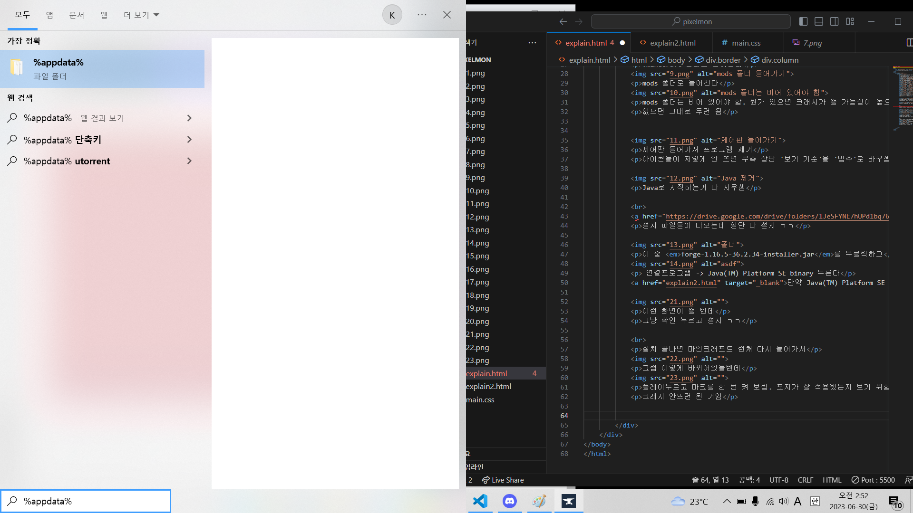다시 %appdata% 폴더에 들어가서 .minecraft -> mods 폴더 들어가셈
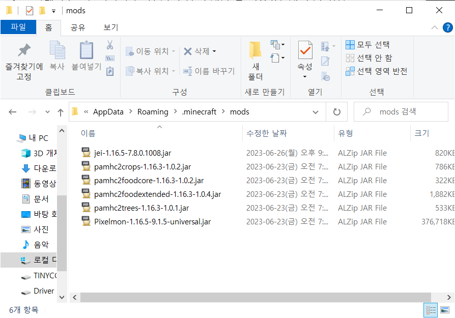아까 다운받은 파일 중 이 6개의 파일을 mods 폴더에 넣으셈
jei-1.16.5-7.8.0.1008.jar
pamhc2crops-1.16.3-1.0.2.jar
pamhc2foodcore-1.16.3-1.0.2.jar
pamhc2foodextended-1.16.3-1.0.4.jar
pamhc2trees-1.16.3-1.0.1.jar
Pixelmon1.16.5-9.1.5-universal.jar
그러면 설치 완료
서버주소 221.159.204.139